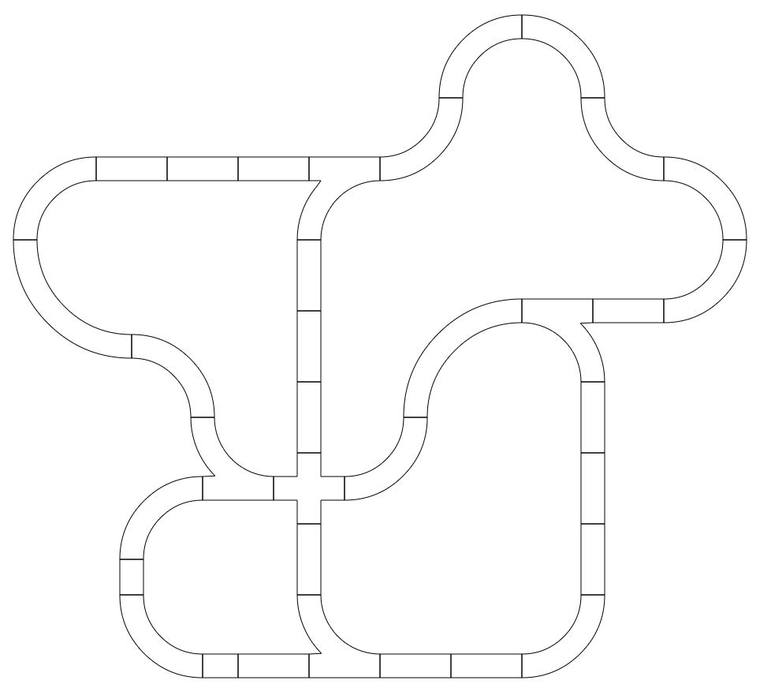

Train layout designer / maker by François CREVOLA
For more informations and instructions of use, see the
online help and watch the video tutorial
or
see example of what can done
. (Contact me at francois (AT) crevola (DOT) org)
